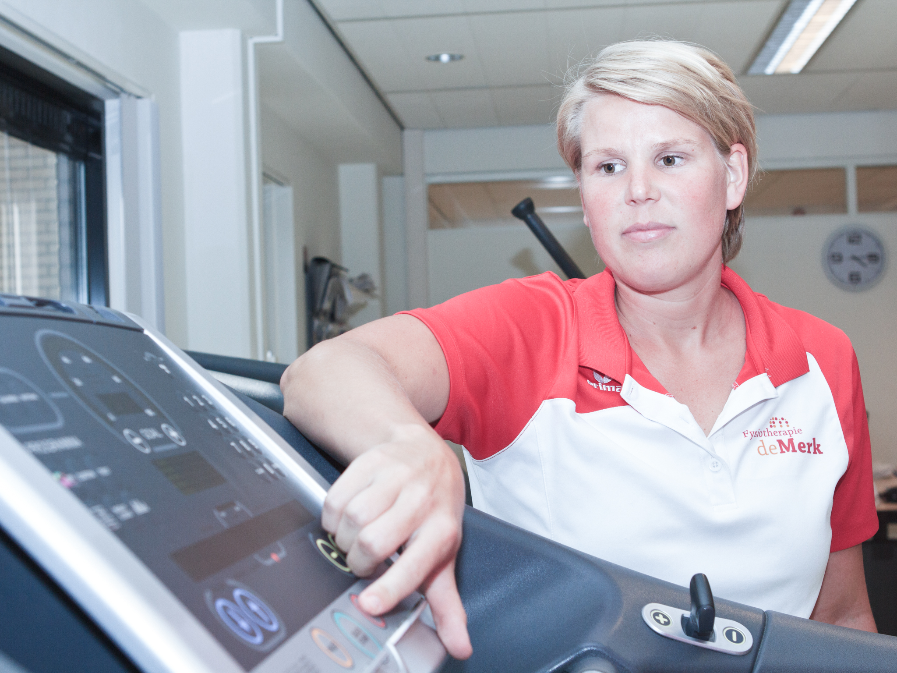

Hart- en longtraining
Speciaal voor mensen met chronische aandoeningen worden er door onze fysiotherapeuten specifieke trainingsprogramma’s opgesteld. Dit zijn trajecten waarin u als patiënt met een hart- of longaandoening begeleid wordt in het beginnen met of blijven bewegen. Bewegen is voor mensen met zo’n chronische aandoening heel belangrijk. Onze zijn erop gericht om uw gezondheid te verbeteren en u handvatten te geven om bewegen in uw dagelijks leven in te bouwen.
COPD
Als u COPD heeft, ademt u moeilijker omdat uw longen beschadigd zijn. Hierdoor komt er minder zuurstof in u bloed. Daardoor kunnen normale dingen lastig zijn zoals traplopen, boodschappen doen of aankleden. COPD is een verzamelnaam voor chronische bronchitis en longemfyseem. Voor COPD patiënten is het extra belangrijk dat u beweegt? Als u minder beweegt, krijgt u juist eerder klachten en nemen uw mogelijkheden steeds verder af. Speciaal voor mensen met COPD zijn er uren dat ze individueel of in groepsverband kunnen oefenen.
Hartrevalidatie
Bewegen is dé manier om de kans op hart- en vaatziekten kleiner te maken. Eigenlijk weten we dat allemaal wel. Wilt u uw kans op (nieuw) hartklachten zo klein mogelijk maken en ervoor zorgen dat uw gezondheid zo optimaal mogelijk is? Of bent u bang dat bewegen uw klachten kunnen verergeren? Het omgekeerde is waar! Speciaal voor mensen die in het verleden een hartinfarct hebben gehad of die een bypassoperatie, dotteringreep, PCI of hartklepoperatie hebben ondergaan, is het beweegprogramma voor mensen met hartaandoeningen ontwikkeld.
Tijdens deze uren stelt u samen met de fysiotherapeut een plan op om gezond en verantwoord te gaan bewegen. Ook werkt u op deze manier aan een actieve leefstijl, wat betekent dat u bijvoorbeeld met COPD minder benauwdheid, meer uithoudingsvermogen zult ervaren. In dit plan wordt aandacht besteed aan lichamelijke oefeningen om uw conditie te verbeteren, maar ook leert u bijvoorbeeld beter omgaan met uw energie, ademhalings- en ontspanningstechnieken.
Bij Fysiotherapie De Merk is Elske geschoold voor het geven van de begeleiding bij hartgerelateerde klachten. Floor en Judith zijn geschoold voor het begeleiden van de COPD patiënten.